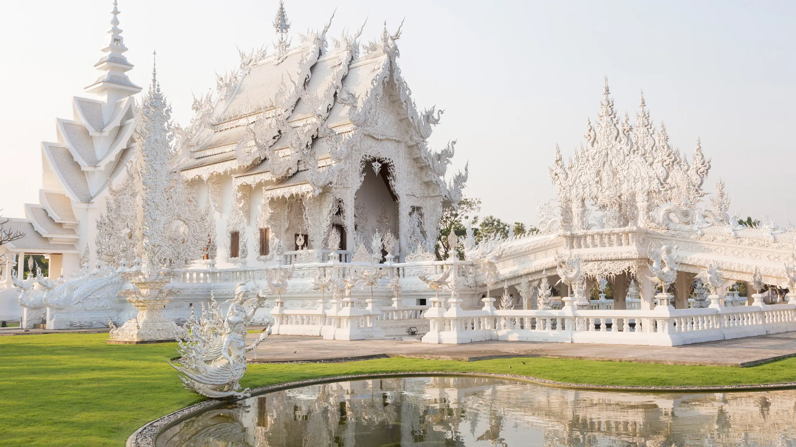
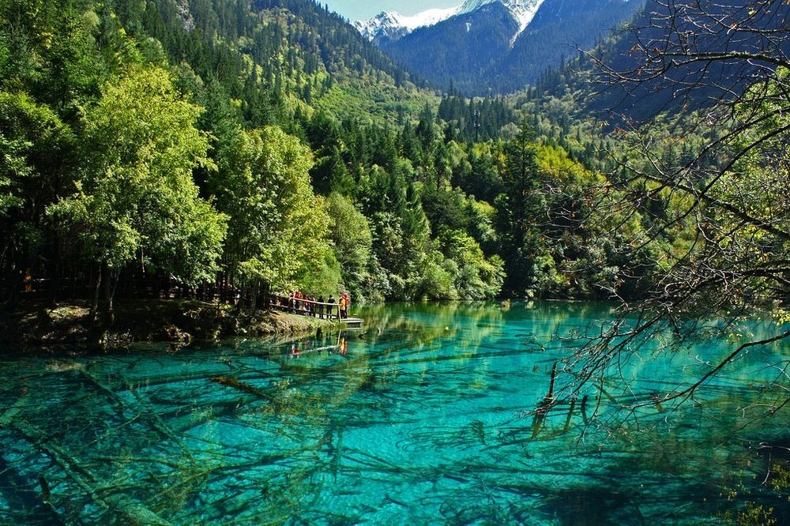
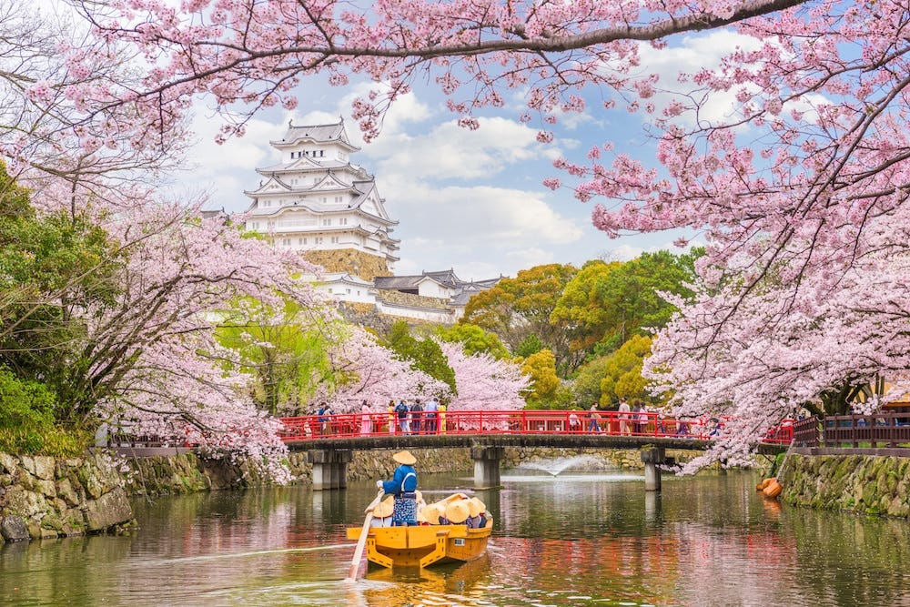
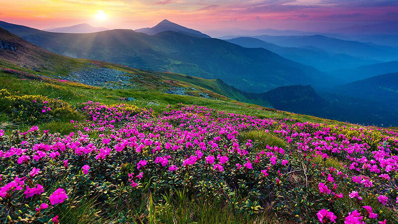
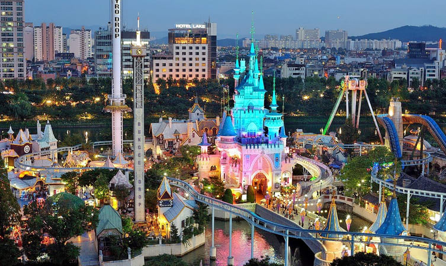

THAILAND
|
Thailand is a tropical escape known for its golden temples, stunning beaches, and lively street markets. From bustling Bangkok to peaceful islands like Phuket, every corner offers adventure and beauty. With friendly locals and flavorful cuisine, Thailand is a dream destination for all kinds of travelers.
|
- Bangkok – The vibrant capital with grand temples like Wat Arun, bustling markets, royal palaces, and exciting nightlife.
- Chiang Mai-A cultural gem in the north, known for its ancient temples, elephant sanctuaries, and scenic mountain views.
- Phuket-Thailand’s largest island, famous for its beautiful beaches, island hopping, and relaxed resort vibes.
- Ayutthaya-A UNESCO World Heritage Site with impressive ancient ruins that showcase the glory of old Siam.
|

CHINA
|
China is a land of timeless wonders and breathtaking contrasts, where ancient landmarks like the Great Wall and the Terracotta Army meet futuristic cities like Shanghai and Shenzhen. Explore serene mountain temples, vibrant street markets, and rich traditions stretching back thousands of years. From dramatic landscapes to imperial palaces, every region offers a new adventure. China invites you to discover its deep history, dynamic culture, and unforgettable scenery. |
- The Great Wall of China-– One of the world’s most iconic landmarks, stretching across stunning mountains and offering incredible views and history.
- The Forbidden City (Beijing)- A vast imperial palace complex that showcases the grandeur of ancient Chinese architecture and dynastic history.
- Terracotta Army (Xi’an)- Thousands of life-sized warriors and horses buried with China’s first emperor, an awe-inspiring archaeological wonder.
- Zhangjiajie National Forest Park-A surreal landscape of towering sandstone pillars, said to have inspired the floating mountains in Avatar.
|

JAPAN
|
Japan is a stunning blend of ancient tradition and modern innovation, where historic temples meet futuristic cities. From cherry blossoms in Kyoto to the neon lights of Tokyo, every moment feels unique and immersive. With peaceful nature, rich culture, and world-class hospitality, Japan offers a travel experience like no other.
|
- Tokyo- A dazzling mix of futuristic tech, fashion, anime culture, and historic shrines—perfect for city lovers and pop culture fans.
- Kyoto-Japan’s cultural heart, known for its beautiful temples, traditional tea houses, geisha districts, and seasonal beauty.
- Mount Fuji-The iconic snow-capped mountain offering scenic hikes, stunning views, and peaceful retreats nearby like Lake Kawaguchi.
- Osaka- A food lover’s paradise with lively street food, historic Osaka Castle, and vibrant nightlife in areas like Dotonbori.
|

INDIA
|
India is a land of vibrant culture, ancient wonders, and breathtaking landscapes—from the majestic Taj Mahal to the peaceful Himalayas. Each region offers a unique blend of traditions, festivals, and colorful local life. With warm hospitality and rich vegetarian cuisine, India promises an unforgettable journey for every traveler.
|
- Taj Mahal (Agra) – A world-famous symbol of love and a stunning example of Mughal architecture in white marble.
- Jaipur (Rajasthan) – Known as the Pink City, it's full of palaces, forts, and vibrant markets rich in royal history.
- Kerala Backwaters – Serene waterways surrounded by lush greenery, best explored by houseboat for a peaceful escape.
- Varanasi – One of the world’s oldest cities, offering deep spiritual experiences along the sacred Ganges River.
|

SOUTH KOREA
|
South Korea is a vibrant mix of ancient palaces, modern cities, and exciting pop culture. From the dynamic streets of Seoul to the peaceful beauty of Jeju Island, every moment is full of discovery. With delicious food, K-pop, and rich traditions, Korea offers a truly unforgettable travel experience.
|
- Seoul – The bustling capital full of palaces, shopping streets, K-pop spots, and a mix of old and new culture.
- Jeju Island – A beautiful volcanic island known for its beaches, waterfalls, lava caves, and relaxing nature.
- Gyeongju – Often called “the museum without walls,” it's filled with ancient temples, tombs, and historical sites.
- Busan – A coastal city famous for its beaches, seafood markets, scenic temples, and vibrant nightlife.
|